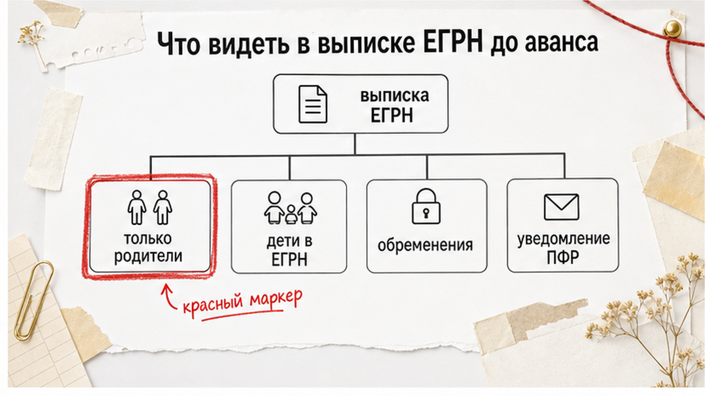

«Маткапитал в сделке был — доли детям уже выделили».
Так в Тюмени продавцы успокаивают покупателя перед авансом. Квартира выглядит спокойной. Дети в комнатах — а в выписке ЕГРН только мама и папа.
Спокойствие обманчиво.
Скидка «потому что с маткапиталом» звучит щедро. По факту вы смотрите объект, где государственные деньги уже вложены, а обязанность оформить доли детям — ещё нет.
Обычный человек видит чистую выписку.
Риэлтор спрашивает:
«А где дети в собственниках?»
Я веду сделки в Тюмени от звонка до регистрации. Расскажу, что поднять до аванса — пока ещё можно отойти без суда.
Разбор не про то, как правильно потратить маткапитал. Речь о том, что смотреть покупателю вторички до аванса: когда в ЕГРН должны быть дети, что значит согласие опеки, и почему с 2026 года отмена согласия банка на выделение долей не отменяет риск «купили — суд отменил».
Быстрый инсайт. Маткапитал — не «бумажка продавца». Если жильё купили с сертификатом, в ЕГРН должны быть родители и дети с долями. Только взрослые после маткапитала — красный маркер: ПФР может требовать возврат, сделку — оспорить. С 2026 года банк на выделение долей в ипотеке не нужен — но обязанность выделить доли никуда не делась. Скидка без проверки — часто плата за риск, не подарок.
«Ну мы же не воровали, просто доли отложили».
Закон смотрит иначе.
Федеральный закон № 256-ФЗ прямо требует: если жильё купили, построили или реконструировали с материнским (семейным) капиталом, его оформляют в общую долевую собственность — лица, получившего сертификат, супруга(и) и всех детей. Включая рождённых после сделки. Размер долей — по соглашению (ч. 4 ст. 10).
Постановление Правительства № 862 задаёт срок: оформить общую собственность в течение 6 месяцев с даты перечисления средств продавцу, снятия обременения с ипотеки, ввода дома — в зависимости от сценария покупки.
Если доли не зарегистрировали, ПФР/СФР вправе требовать возврат средств. Сделку могут оспорить опека или прокуратура — вплоть до признания недействительности.
Для покупателя это не «их семейное дело». Это риск потерять квартиру после регистрации.
Обычный человек думает: «Продавцы же взрослые, сами разберутся с Пенсионным».
Риэлтор спрашивает:
«А если не разберутся — кто останется с квартирой, которую оспорят?»
Ответ один: тот, кто уже внёс деньги и зарегистрировал право.
Вердикт: маткапитал без детей в ЕГРН — не мелочь, а незакрытая обязанность перед государством.

«Нам скинули выписку — там же всё нормально».
Нормально — когда смотрят не скрин «с прошлого года», а свежий PDF и нужный раздел.
До аванса нужна актуальная выписка ЕГРН. В блоке правообладателей:
Дополнительно смотрите обременения — ипотека, запреты, аресты. Про строки в выписке, после которых аванс вносить нельзя, я разбирал отдельно: маткапитал не отменяет проверку реквизита обременений.
Продавец может показать документы из ПФР/СФР — уведомление о направлении средств на улучшение жилищных условий. Молчание плюс «чистая» выписка без детей после маткапитала — не норма.
«Но ведь в обременениях пусто — значит, чисто».
Пустой реквизит обременений не отвечает на вопрос о составе собственников. Маткапитал живёт в истории прав и в обязанности выделить доли — не всегда в строке «ипотека» или «арест».
Именно поэтому выписку читают целиком: правообладатели, обременения, основания регистрации. Одного раздела мало.
Обычный человек верит PDF на экране.
Риэлтор спрашивает:
«Когда заказана выписка и кто в собственниках по долям?»
Вердикт: без свежей выписки и прямого вопроса про маткапитал торг — не о той сумме.
«Ребёнку же всего семь, он и не подпишет — родители решат».
Не решат без опеки.
Отчуждение имущества несовершеннолетнего без согласия органа опеки недопустимо (ст. 37 СК РФ, ст. 292 ГК РФ). Продажа квартиры, где у ребёнка доля, требует:
Без согласия опеки договор могут признать ничтожным.
Покупатель, который внёс аванс до копии разрешения опеки, рискует месяцами ждать и сорвать сделку.
«Нотариус же всё проверит».
Нотариус при покупке не заменяет проверку истории маткапитала и опеки. Он смотрит пакет на столе, а не вашу головную боль через год.
Условие опеки звучит мягко — «не ухудшить жилищные условия ребёнка». На практике это площадь, район, качество дома. Опека сравнивает «было» и «станет». Покупатель, который торопит аванс, не видит этой внутренней экспертизы — а сделка может встать именно на ней.
«Мы купим ребёнку квартиру побольше — опека одобрит».
Может. Но одобрит — когда увидит документы на новое жильё, а не обещание в переписке.
Вердикт: детская доля — не формальность. Без опеки и нотариуса путь закрыт.
«С 2026 всё упростили — банк больше не мешает».
Упростили жизнь продавцу. Не покупателю.
С 1 января 2026 (закон, разъяснён в публичных комментариях 2026 года) не требуется согласие банка на выделение долей в ипотечной квартире, купленной с маткапиталом — даже если кредит не погашен. Годами откладывали доли «пока закроем ипотеку» — теперь формальный барьер снят.
Для покупателя логика другая:
С июля 2025 года на практике доли можно регистрировать до снятия ипотечного обременения. Контроль ПФР и качество проверки до аванса — на покупателе и риелторе, а не на обещании «банк уже не нужен».
Обычный человек путает два разных согласия банка.
Риэлтор различает: на выделение долей — с 2026 не нужно. На продажу залогового объекта — по-прежнему нужно, если кредит жив.
«Значит, продавец сейчас быстро выделит доли и продаст».
Может. Но выделение — отдельный регистрационный этап. Продажа — другой. Покупатель, который вносит аванс на словах «сейчас оформим», платит за чужой календарь.
Вердикт: новость 2026 года не делает покупку без детей в ЕГРН безопасной.
«Ну пройдёт же, столько лет живут».
Проходит — пока не пришли ПФР, опека или прокуратура.
Типичная механика для покупателя:
Это не теория «на будущее».
На вторичке в Тюмени часто продают квартиры, купленные 5–10 лет назад с маткапиталом и ипотекой. Доли «обещали выделить потом» — знакомый сценарий.
Обычный человек видит скидку и думает: выгодная покупка.
Риэлтор видит вложенную господдержку без закрытого контура долей — и спрашивает, кто заплатит, если придут требования.
Реестр обременений и история прав не прощают «потом». Покупатель, который зарегистрировал право, может столкнуться со спорами третьих лиц — дети, опека, ПФР. Предавансовая проверка здесь не паранойя, а рабочий инструмент.
Ориентиры обзоров рынка на 2026 год — не цена сделки, а масштаб господдержки в объекте:
Если в объекте «сидит» маткапитал, а детей в ЕГРН нет — вы оцениваете не только рыночную цену, но и незакрытую обязанность семьи перед государством и детьми.
Скидка без проверки долей — часто плата за риск, а не подарок.
Вердикт: купили «дешевле» — проверьте, не покупаете ли чужой долг перед ПФР.
«Завтра подпишем, через неделю ключи».
С детскими долями так не работает.
Сделка с детскими долями в Тюмени растягивается:
Аванс до понимания календаря и до копии согласия опеки — если дети собственники — типичная ошибка уставшего покупателя.
Тот же риск — с расчётами. Если продавец давит «только сегодня», а вы ещё не поняли, куда уйдут деньги при срыве, сначала разберитесь с распиской и порядком расчёта — потом аванс.
«Но скидка 1–3 миллиона, такого больше не будет».
Бывает. И часто идёт в связке с «срочной продажей» без юридического разбора. Скидка без проверки — red flag, не подарок судьбы.
Вердикт: календарь сделки с маткапиталом и детскими долями — недели, не дни. Аванс — после плана, не до него.
До аванса:
Проверка не обещает, что суда не будет. Она обещает, что вы вошли в аванс с открытыми глазами.
«Мы же уже смотрели эту квартиру дважды».
Смотрели — но не на маткапитал.
Вердикт: одна пропущенная строка в выписке или один невыданный вопрос про маткапитал — дороже любой скидки.
Федеральные правила в Тюмени те же. Локальная специфика — рынок вторички с ипотекой и маткапиталом в типовых ЖК: Европейский, Тюменская Слобода, центр, Восточный и др.
Частый кадр: продавец один взрослый в выписке, дети живут в квартире, но не в ЕГРН.
На показе всё выглядит семейно и спокойно. Детская комната, игрушки, школьные рюкзаки. Выписка — другая история.
«Дети же маленькие, им доля не нужна».
Закону нужна. И ПФР тоже.
Задача покупателя — не торговаться до проверки долей.
Риелтор продавца защищает продавца. Покупателю нужен свой разбор до аванса — выписка, маткапитал, опека, банк.
Маткапитал и доли не заменяют проверку расчётов — аккредитив, депозит нотариуса — и других строк ЕГРН: обременения, наследство, доверенности. Блоки риска суммируются, а не заменяют друг друга.
Материал — ориентир для сторон сделки, не индивидуальная юридическая консультация. Сроки опеки, тарифы нотариуса и перечень документов — уточнять в органе опеки по месту жительства ребёнка и в нотариальной конторе Тюмени. Суммы маткапитала — ориентиры обзоров 2026 года; официальные индексации — на сайте СФР.
Материал проверен: Святослав Шакин, риелтор в Тюмени.
Если в Тюмени смотрите квартиру «с маткапиталом», а в ЕГРН детей не видно — пришлите выписку в Telegram. Разберём доли, опеку и сроки до того, как внесёте аванс.
Позвонить: +7 922 001 65 05 (Пн–Вс 9:00–22:00).
Написать в MAX — по этому же номеру в приложении MAX.
Проверка не обещает нулевой риск. Она обещает, что вы вошли в аванс с открытыми глазами — и не заменяет индивидуальную юрконсультацию.